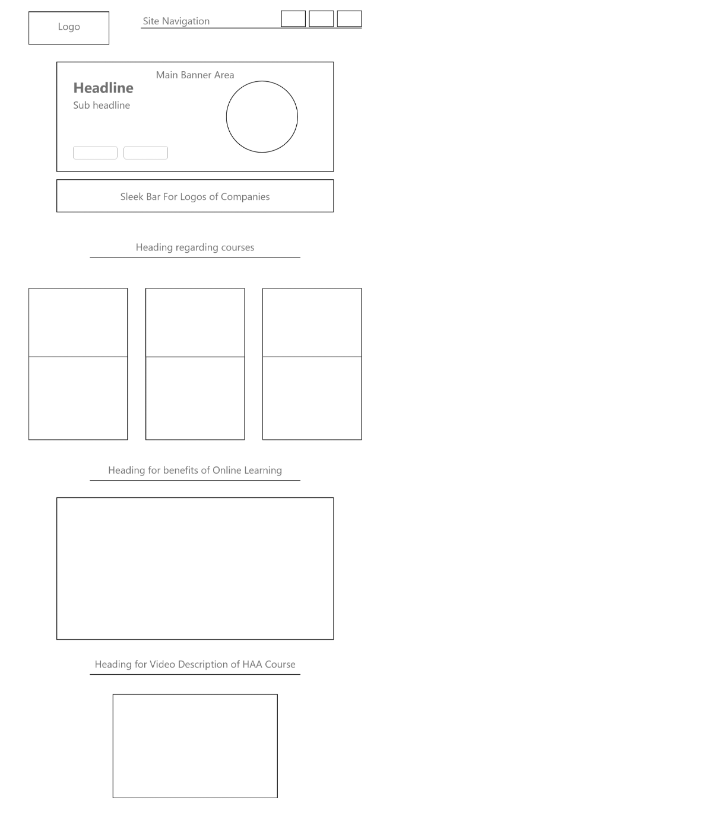
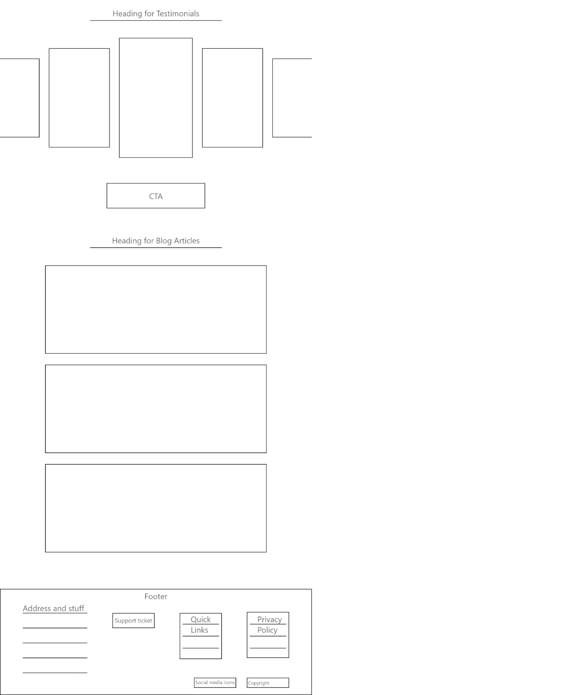

Hearing Aid Academy
@Concevoir Web Services
Hearing Aid Academy is an institute
for people who want to be a hearing
aid specialist.
Overview
About
Hearing Aid Academy
May 2020 - June 2020
Hearing Aid Academy
May 2020 - June 2020
The Hearing Aid Academy (HAA) is an online education program for Hearing Aid Specialists.
It arms you with all the tools you need to successfully pass the state license exam and start your new career in the fast growing hearing instrument services industry.
It arms you with all the tools you need to successfully pass the state license exam and start your new career in the fast growing hearing instrument services industry.
Design Process
Empathize
After a careful analysis of the Hearing Aid Academy website, I drew the following conclusion of why it needed a redesign:
- The website looks outdated.
- There was no trust building up when the user sees it for the first time.
- The brand values of the company were not clearly visible on the website.
- No way to understand the delivery process for users who don't know about it.
Research
What is Hearing Aid Academy?
An Educational Institution
For people who are willing to be a hearing aid specialist.
Hearing Aid Academy aims to give degree to those who want to pursue hearing aid specialist as their career.
Completion of course within 3-6
For people who are willing to be a hearing aid specialist.
Hearing Aid Academy aims to give degree to those who want to pursue hearing aid specialist as their career.
Completion of course within 3-6
Identifying
users
- People looking for career change.
- People of age group 18-30.
- Women seeking to start a new job.
Research
Identifying problems with current website :
The website looks outdated in visual design.
Not able to figure out how it works, for new time visitors.
No center stage for CTA Register for the course, Learn more about it. Reading just long text for the explanation of s
Not able to figure out how it works, for new time visitors.
No center stage for CTA Register for the course, Learn more about it. Reading just long text for the explanation of s
Solutions —<
Things to Have
These are content that would appear on the home screen that would solve all the problems analyzed from the current website:
Explaining what is Hearing Aid Academy Its brand values and vision.
How should I start FAQs.
What Hearing Aid Academy does About Us
Benefits of Joining Hearing Aid Academy.
People who already completed the course.
Latest blogs about hearing aid.
What Hearing Aid Academy does About Us
Benefits of Joining Hearing Aid Academy.
People who already completed the course.
Latest blogs about hearing aid.
Mid - Fidelity Wireframes


High - Fidelity Wireframes

Final Thoughts
Closing thoughts
This was the first website I created professionally during my first internship asUI/UX Designer.
It was a rollercoaster for me since it was the first time I faced a client on my own and their reviews always made me go mad at first. Eventually I got okay with bearing reviews and within 2-3 weeks, I completed their website redesign and they were finally happy with it.
It was a rollercoaster for me since it was the first time I faced a client on my own and their reviews always made me go mad at first. Eventually I got okay with bearing reviews and within 2-3 weeks, I completed their website redesign and they were finally happy with it.